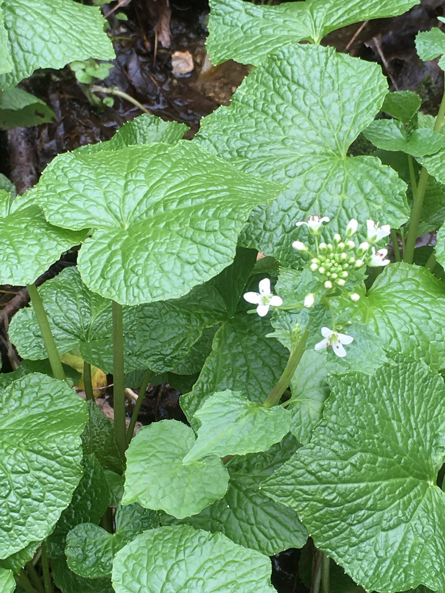

Journal · Shipping
Why fresh orders ship on Mondays
Living plants and fresh rhizomes don’t belong in a warehouse over the weekend. Here’s how our weekly schedule works.

Fresh wasabi rhizomes and plant starts are alive when they leave us, and we want them that way when they reach you. That’s the reason behind our shipping schedule.
One day a week
Fresh orders ship once a week, on Monday (or Tuesday when Monday is a federal holiday). Shipping early in the week means your package travels Monday through midweek and never sits in a carrier facility over a weekend. Everything goes by USPS Priority Mail, and fresh items are packed with insulated cold packs.
The Friday cutoff
To make Monday’s shipment, we need your order by Friday at 6 p.m. Eastern. Orders that come in after that ship the following Monday.
Spring and fall only
We ship fresh rhizomes and plant starts from March through May and September through November. Milder weather makes for safer travel and gives new plants the best chance to settle in. If heat or a hard freeze is forecast along your package’s route, we hold the whole order for the next available ship date and email you.
The live schedule, including the next ship date, is always on our shipping page. Want to know when the next season opens? Sign up for season notices.
Follow along